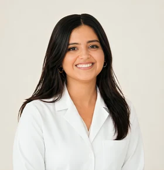

أسئلة حول صحة المرأة في العوينة، تونس
معلومات عامة تساعدك على التحضير للاستشارة، ولا تعوّض رأي الطبيبة حسب حالتك.
متى أزور طبيبة النساء؟
يمكنك استشارة طبيبة النساء في مختلف الأعمار بحسب أسئلتك أو أعراضك. قد تكون الزيارة الأولى حواراً دون فحص منهجي.
ماذا أفعل عند آلام الدورة الشهرية؟
الألم الذي يعطّل نشاطك يستدعي استشارة. اطلبي المساعدة سريعاً عند ظهور علامات الإنذار.
متى يُجرى فحص عنق الرحم؟
يعتمد نوع الفحص وتوقيته على العمر والتاريخ الصحي والتوصيات المعمول بها. اسألي طبيبتك عما يناسب حالتك.
كيف أختار وسيلة منع الحمل؟
تختلف الخيارات بحسب صحتك ورغباتك ومشروعك العائلي. تساعدك الاستشارة على فهم الفوائد والموانع.
متى أبدأ متابعة الحمل؟
اتصلي بالعيادة بعد تأكيد الحمل لتنظيم الموعد الأول وتحضير أسئلتك وفحوصاتك السابقة إن وجدت.
كيف أتعامل مع سن اليأس؟
إذا كانت التغيرات تزعجك، دوّني الأعراض والأسئلة لمناقشة الخيارات المناسبة مع الطبيبة.
ماذا أفعل عند أعراض عدوى نسائية؟
تجنبي التشخيص الذاتي واذكري الأعراض وتطورها للطبيبة للحصول على التوجيه الملائم.
كيف أتجنب التهابات المسالك البولية؟
تختلف النصائح بحسب الحالة، خاصة عند تكرار الالتهابات. اطلبي رأياً طبياً عند ظهور الأعراض، لا سيما الحمى أو الألم الشديد.
هل يمكن أن يرافقني شريكي؟
يمكنك سؤال العيادة قبل الموعد. تبقى راحتك وخصوصيتك من الأولويات.
أين تقع عيادة الدكتورة هاجر القابسي بوجلبان في العوينة؟
تقع العيادة في مجمع أوليفيا الطبي، الطابق الأول، C1-8، نهج الشيخ محمد النيفر، حي النخيل، بجانب مونوبري الزيتون في العوينة، تونس.
كيف أحجز موعداً مع طبيبة النساء؟
اتصلي بالعيادة على الرقم +216 93 482 052 لطلب موعد، أو راسليها على hagergabssi@yahoo.fr.
هل تستقبل العيادة المريضات يوم السبت؟
نعم، تستقبل العيادة المريضات يوم السبت من 9:30 إلى 13:00 بموعد مسبق، ومن الاثنين إلى الجمعة من 9:00 إلى 17:00.
ماذا أحضّر قبل الاستشارة النسائية؟
دوّني أسئلتك وأحضري، إن وجدت، نتائج فحوصك السابقة وقائمة الأدوية ومعلومات عن تاريخك الصحي. يمكن للعيادة توضيح الوثائق المطلوبة عند حجز الموعد.
معلومات عامة تساعدك على التحضير للاستشارة، ولا تعوّض رأي الطبيبة حسب حالتك.
